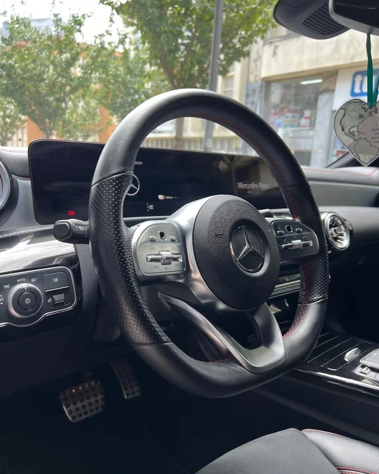
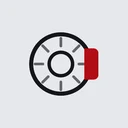
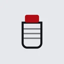
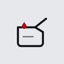
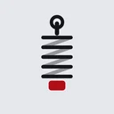
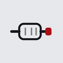

Ver detalhe — Mecânica e diagnóstico
Mecânica e diagnóstico
Diagnóstico antes de orçamento, em vez de trocar peças à sorte.
- Motor e embraiagem
- Avarias elétricas
- Luz de avaria acesa


Oficina multimarca · São João da Madeira
Mecânica, eletricidade e eletrónica automóvel na Rua da Liberdade. Fazemos o diagnóstico, explicamos o que encontrámos e só avançamos depois de si. Também tratamos das lavagens.
O preço é dito antes de se mexer no carro.
O que fazemos
Oficina multimarca. Diagnóstico antes de orçamento, e o preço dito antes de se mexer no carro.
Diagnóstico antes de orçamento, em vez de trocar peças à sorte.
Consumíveis substituídos e o resto verificado ponto por ponto.


Espuma activa e lavagem manual, na box da oficina.


Higienização do evaporador e do habitáculo.

Balcão de peças
Esta lista mostra o tipo de peças que costumamos ter à mão na oficina. Confirme connosco antes de se deslocar.
Não vendemos online. Este catálogo é meramente informativo e não constitui proposta contratual — a venda é feita na oficina. Os preços indicados são da peça, com IVA, e não incluem montagem nem mão-de-obra, que são orçamentadas à parte. A disponibilidade está sujeita a confirmação. Peças novas têm 3 anos de garantia legal de conformidade; peças usadas, no mínimo 18 meses.





Onde estamos
Na zona pedonal junto à Praça Luís Ribeiro, no centro de São João da Madeira — a poucos minutos de Oliveira de Azeméis e de Santa Maria da Feira.
 O mapa é do Google e instala cookies. Ao carregar aqui está a aceitá-los.
O mapa é do Google e instala cookies. Ao carregar aqui está a aceitá-los.
Perguntas frequentes
Somos uma oficina multimarca e trabalhamos com ligeiros de qualquer marca. O Regulamento (UE) 2018/858 garante às oficinas independentes o acesso à informação técnica de reparação dos fabricantes.
Não. Fazer a manutenção numa oficina independente não anula a garantia do fabricante. A garantia só pode ser posta em causa se ficar demonstrado que uma intervenção concreta causou o defeito.
Sim. Apresentamos o que encontrámos e o custo previsto antes de avançar. Nenhum trabalho é feito sem a sua autorização.
Sim, sempre. Basta indicar o NIF no momento do pagamento.
Sim, ao balcão, na oficina. A secção Balcão de peças mostra o tipo de peças que costumamos ter; a disponibilidade é confirmada connosco. A venda é feita na oficina — o site é meramente informativo.